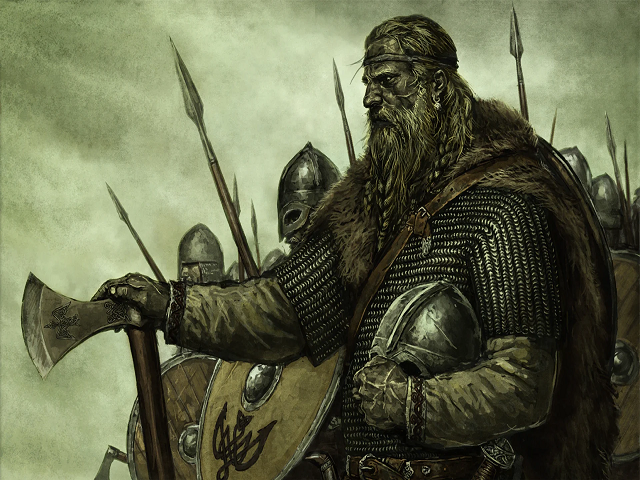
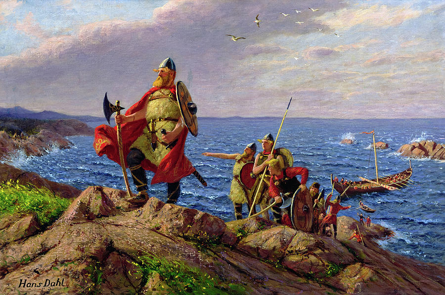
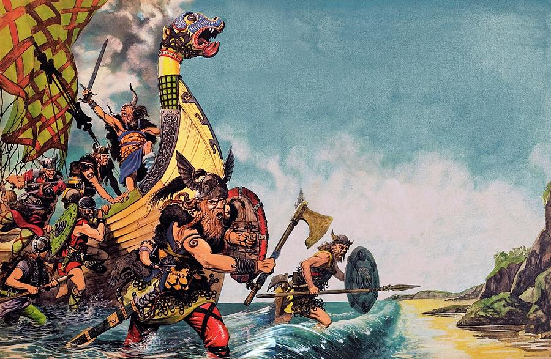

Vikingar var coola

Från spelet Mount and Blade Warband. Som med det första spelet är Mount & Blade: Warband ett sandlåderollspel som utspelar sig i det medeltida landet Calradia. I början av spelet anpassar spelaren karaktären och kommer in i världen. Att resa runt på övervärldskartan görs genom att peka och klicka på önskad plats. Om spelaren stöter på andra parter kan strid uppstå, vid vilken tidpunkt spelet växlar till realtid. Om spelaren vinner striden ökar deras anseende. Med tillräckligt rykte kan spelaren arbeta för lords, sätta upp sina egna förläningar, attackera städer och anställa fler soldater. Spelaren kan också stöta på följeslagare över hela kartan för att lägga till förmågor till sitt krigsband. Spelet vinner genom att bli härskare över hela Calradia.
Vikingarna var oslagbara

Tavla från Christian Krohg som föreställer när vikingaren Leif Erikssonkoloniserade Områden i Atlanten. Denna tavla ska vara gjord för att föreställa när han anlände i Amerika för att starta en koloni.Den nordiska koloniseringen av Nordamerika började i slutet av 900-talet, när norrlänningar utforskade och bosatte sig i områden i Nordatlanten inklusive de nordöstra utkanterna av Nordamerika. Rester av nordiska byggnader hittades vid L'Anse aux Meadows nära den norra spetsen av Newfoundland 1960 från cirka 1 000 år sedan. Denna enda bosättning, belägen på ön Newfoundland och inte på det nordamerikanska fastlandet, övergavs plötsligt mindre än tio år efter att ha byggts. År 2021 gjorde en kombination av acceleratormasspektrometri för att mäta kol-14 och trädringräkningar som gjorde det möjligt för forskare att visa att flera stycken trä skars av norrmännen just år 1021.
Jag vill ha vikingar

De flesta vet idag att vikingar inte hade horn på hjälmarna, men det övriga paketet av myter från det sena 1800-talets nationalromantik lever fortfarande kvar. För den borgliga 1800-talsmänniskan blev vikingen en våldsam storvuxen man som plundrade omvärlden och kvinnorna tänktes helt bort ur bilden.